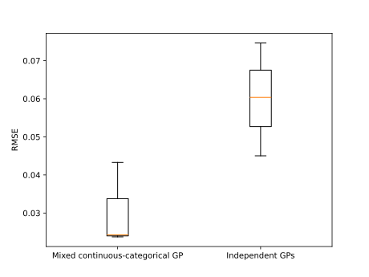

Note
Go to the end to download the full example code.
Gaussian Process Regression: surrogate model with continuous and categorical variables¶
We consider here the surrogate modeling of an analytical function characterized by continuous and categorical variables. Refer to Gaussian process regression.
import openturns as ot
import numpy as np
import matplotlib.pyplot as plt
# Seed chosen in order to obtain a visually nice plot
ot.RandomGenerator.SetSeed(5)
We first show the advantage of modeling the various levels of a mixed continuous / categorical function through a single surrogate model on a simple test-case taken from [pelamatti2020], defined below.
def illustrativeFunc(inp):
x, z = inp
y = np.cos(7 * x) + 0.5 * z
return [y]
dim = 2
fun = ot.PythonFunction(dim, 1, illustrativeFunc)
numberOfZLevels = 2 # Number of categorical levels for z
# Input distribution
dist = ot.JointDistribution(
[
ot.Uniform(0, 1),
ot.FiniteDiscreteDistribution(ot.Sample.BuildFromPoint(range(numberOfZLevels))),
]
)
In this example, we compare the performances of the LatentVariableModel
with a naive approach, which would consist in modeling each combination of categorical
variables through a separate and independent Gaussian process.
In order to deal with mixed continuous / categorical problems we can rely on the
ProductCovarianceModel class. We start here by defining the product kernel,
which combines SquaredExponential kernels for the continuous variables, and
LatentVariableModel for the categorical ones.
latDim = 1 # Dimension of the latent space
activeCoord = 1 + latDim * (
numberOfZLevels - 2
) # Nb of active coordinates in the latent space
kx = ot.SquaredExponential(1)
kz = ot.LatentVariableModel(numberOfZLevels, latDim)
kLV = ot.ProductCovarianceModel([kx, kz])
kLV.setNuggetFactor(1e-6)
# Bounds for the hyperparameter optimization
lowerBoundLV = [1e-4] * dim + [-10.0] * activeCoord
upperBoundLV = [2.0] * dim + [10.0] * activeCoord
# Distribution for the hyperparameters initialization
initDistLV = ot.DistributionCollection()
for i in range(len(lowerBoundLV)):
initDistLV.add(ot.Uniform(lowerBoundLV[i], upperBoundLV[i]))
initDistLV = ot.JointDistribution(initDistLV)
As a reference, we consider a purely continuous kernel for independent Gaussian processes. One for each combination of categorical variables levels.
kIndependent = ot.SquaredExponential(1)
lowerBoundInd = [1e-4]
upperBoundInd = [20.0]
initDistInd = ot.DistributionCollection()
for i in range(len(lowerBoundInd)):
initDistInd.add(ot.Uniform(lowerBoundInd[i], upperBoundInd[i]))
initDistInd = ot.JointDistribution(initDistInd)
initSampleInd = initDistInd.getSample(10)
optAlgInd = ot.MultiStart(ot.Cobyla(), initSampleInd)
Generate the training data set
Initialize and parameterize the optimization algorithm
Create and train the Gaussian process models
basis = ot.ConstantBasisFactory(2).build()
fitterLV = ot.GaussianProcessFitter(x, y, kLV, basis)
fitterLV.setOptimizationAlgorithm(optAlgLV)
fitterLV.run()
regressionLV = ot.GaussianProcessRegression(fitterLV.getResult())
regressionLV.run()
resLV = regressionLV.getResult()
resIndependentList = []
for z in range(2):
# Select the training samples corresponding to the correct combination
# of categorical levels
ind = np.where(np.all(np.array(x[:, 1]) == z, axis=1))[0]
xLoc = x[ind][:, 0]
yLoc = y[ind]
# Create and train the Gaussian process models
basis = ot.ConstantBasisFactory(1).build()
fitter_independent = ot.GaussianProcessFitter(xLoc, yLoc, kIndependent, basis)
fitter_independent.setOptimizationAlgorithm(optAlgInd)
fitter_independent.run()
regression_independent = ot.GaussianProcessRegression(
fitter_independent.getResult()
)
regression_independent.run()
resIndependentList.append(regression_independent.getResult())
Plot the prediction of the mixed continuous / categorical GP, as well as the one of the two separate continuous GPs
fig, (ax1, ax2) = plt.subplots(2, 1, sharex=True, figsize=(15, 10))
for z in range(numberOfZLevels):
# Select the training samples corresponding to the correct combination
# of categorical levels
ind = np.where(np.all(np.array(x[:, 1]) == z, axis=1))[0]
xLoc = x[ind][:, 0]
yLoc = y[ind]
# Compute the models predictive performances on a validation data set.
# The predictions are computed independently for each level of z,
# i.e., by only considering the values of z corresponding to the
# target level.
ind = np.where(np.all(np.array(xPlt[:, 1]) == z, axis=1))[0]
xPltInd = xPlt[ind]
yPltInd = yPlt[ind]
predMeanLV = resLV.getMetaModel()(xPltInd)
predMeanInd = resIndependentList[z].getMetaModel()(xPltInd[:, 0])
cond_covLV = ot.GaussianProcessConditionalCovariance(resLV)
cond_independent = ot.GaussianProcessConditionalCovariance(resIndependentList[z])
predSTDLV = np.sqrt(cond_covLV.getConditionalMarginalVariance(xPltInd))
predSTDInd = np.sqrt(cond_independent.getConditionalMarginalVariance(xPltInd[:, 0]))
(trainingData,) = ax1.plot(xLoc[:, 0], yLoc, "r*")
(trueFunction,) = ax1.plot(xPltInd[:, 0], yPltInd, "k--")
(prediction,) = ax1.plot(xPltInd[:, 0], predMeanLV, "b-")
stdPred = ax1.fill_between(
xPltInd[:, 0].asPoint(),
(predMeanLV - predSTDLV).asPoint(),
(predMeanLV + predSTDLV).asPoint(),
alpha=0.5,
color="blue",
)
ax2.plot(xLoc[:, 0], yLoc, "r*")
ax2.plot(xPltInd[:, 0], yPltInd, "k--")
ax2.plot(xPltInd[:, 0], predMeanInd, "b-")
ax2.fill_between(
xPltInd[:, 0].asPoint(),
(predMeanInd - predSTDInd).asPoint(),
(predMeanInd + predSTDInd).asPoint(),
alpha=0.5,
color="blue",
)
ax1.legend(
[trainingData, trueFunction, prediction, stdPred],
["Training data", "True function", "Prediction", "Prediction standard deviation"],
)
ax1.set_title("Mixed continuous-categorical modeling")
ax2.set_title("Separate modeling")
ax2.set_xlabel("x", fontsize=15)
ax1.set_ylabel("y", fontsize=15)
ax2.set_ylabel("y", fontsize=15)

Text(99.7171875, 0.5, 'y')
It can be seen that the joint modeling of categorical and continuous variables improves the overall prediction accuracy, as the Gaussian process model is able to exploit the information provided by the entire training data set.
We now consider a more complex function which is a modified version of the Goldstein function, taken from [pelamatti2020]. This function depends on 2 continuous variables and 2 categorical ones. Each categorical variable is characterized by 3 levels.
def h(x1, x2, x3, x4):
y = (
53.3108
+ 0.184901 * x1
- 5.02914 * x1**3 * 1e-6
+ 7.72522 * x1**4 * 1e-8
- 0.0870775 * x2
- 0.106959 * x3
+ 7.98772 * x3**3 * 1e-6
+ 0.00242482 * x4
+ 1.32851 * x4**3 * 1e-6 * 0.00146393 * x1 * x2
- 0.00301588 * x1 * x3
- 0.00272291 * x1 * x4
+ 0.0017004 * x2 * x3
+ 0.0038428 * x2 * x4
- 0.000198969 * x3 * x4
+ 1.86025 * x1 * x2 * x3 * 1e-5
- 1.88719 * x1 * x2 * x4 * 1e-6
+ 2.50923 * x1 * x3 * x4 * 1e-5
- 5.62199 * x2 * x3 * x4 * 1e-5
)
return y
def Goldstein(inp):
x1, x2, z1, z2 = inp
x1 = 100 * x1
x2 = 100 * x2
if z1 == 0:
x3 = 80
elif z1 == 1:
x3 = 20
elif z1 == 2:
x3 = 50
else:
print("error, no matching category z1")
if z2 == 0:
x4 = 20
elif z2 == 1:
x4 = 80
elif z2 == 2:
x4 = 50
else:
print("error, no matching category z2")
return [h(x1, x2, x3, x4)]
dim = 4
fun = ot.PythonFunction(dim, 1, Goldstein)
numberOfZLevels1 = 3 # Number of categorical levels for z1
numberOfZLevels2 = 3 # Number of categorical levels for z2
# Input distribution
dist = ot.JointDistribution(
[
ot.Uniform(0, 1),
ot.Uniform(0, 1),
ot.FiniteDiscreteDistribution(
ot.Sample.BuildFromPoint(range(numberOfZLevels1))
),
ot.FiniteDiscreteDistribution(
ot.Sample.BuildFromPoint(range(numberOfZLevels2))
),
]
)
As in the previous example, we start here by defining the product kernel,
which combines SquaredExponential kernels for the continuous variables, and
LatentVariableModel for the categorical ones.
latDim = 2 # Dimension of the latent space
activeCoord = (
2 + latDim * (numberOfZLevels1 - 2) + latDim * (numberOfZLevels2 - 2)
) # Nb ative coordinates in the latent space
kx1 = ot.SquaredExponential(1)
kx2 = ot.SquaredExponential(1)
kz1 = ot.LatentVariableModel(numberOfZLevels1, latDim)
kz2 = ot.LatentVariableModel(numberOfZLevels2, latDim)
kLV = ot.ProductCovarianceModel([kx1, kx2, kz1, kz2])
kLV.setNuggetFactor(1e-6)
# Bounds for the hyperparameter optimization
lowerBoundLV = [1e-4] * dim + [-10] * activeCoord
upperBoundLV = [3.0] * dim + [10.0] * activeCoord
# Distribution for the hyperparameters initialization
initDistLV = ot.DistributionCollection()
for i in range(len(lowerBoundLV)):
initDistLV.add(ot.Uniform(lowerBoundLV[i], upperBoundLV[i]))
initDistLV = ot.JointDistribution(initDistLV)
Alternatively, we consider a purely continuous kernel for independent Gaussian processes. one for each combination of categorical variables levels.
kIndependent = ot.SquaredExponential(2)
lowerBoundInd = [1e-4, 1e-4]
upperBoundInd = [3.0, 3.0]
initDistInd = ot.DistributionCollection()
for i in range(len(lowerBoundInd)):
initDistInd.add(ot.Uniform(lowerBoundInd[i], upperBoundInd[i]))
initDistInd = ot.JointDistribution(initDistInd)
initSampleInd = initDistInd.getSample(10)
optAlgInd = ot.MultiStart(ot.Cobyla(), initSampleInd)
In order to assess their respective robustness with regards to the training data set, we repeat the experiments 3 times with different training of size 72, and compute each time the normalized prediction Root Mean Squared Error (RMSE) on a test data set of size 1000.
rmseLVList = []
rmseIndList = []
for rep in range(3):
# Generate the normalized training data set
x = dist.getSample(72)
y = fun(x)
yMax = y.getMax()
yMin = y.getMin()
y = (y - yMin) / (yMin - yMax)
# Initialize and parameterize the optimization algorithm
initSampleLV = initDistLV.getSample(10)
optAlgLV = ot.MultiStart(ot.Cobyla(), initSampleLV)
# Create and train the Gaussian process models
basis = ot.ConstantBasisFactory(dim).build()
fitterLV = ot.GaussianProcessFitter(x, y, kLV, basis)
fitterLV.setOptimizationAlgorithm(optAlgLV)
fitterLV.run()
regressionLV = ot.GaussianProcessRegression(fitterLV.getResult())
regressionLV.run()
resLV = regressionLV.getResult()
# Compute the models predictive performances on a validation data set
xVal = dist.getSample(1000)
yVal = fun(xVal)
yVal = (yVal - yMin) / (yMin - yMax)
valLV = ot.MetaModelValidation(yVal, resLV.getMetaModel()(xVal))
rmseLV = valLV.getResidualSample().computeStandardDeviation()[0]
rmseLVList.append(rmseLV)
error = ot.Sample(0, 1)
for z1 in range(numberOfZLevels1):
for z2 in range(numberOfZLevels2):
# Select the training samples corresponding to the correct combination
# of categorical levels
ind = np.where(np.all(np.array(x[:, 2:]) == [z1, z2], axis=1))[0]
xLoc = x[ind][:, :2]
yLoc = y[ind]
# Create and train the Gaussian process models
basis = ot.ConstantBasisFactory(2).build()
fitter_independent = ot.GaussianProcessFitter(
xLoc, yLoc, kIndependent, basis
)
fitter_independent.setOptimizationAlgorithm(optAlgInd)
fitter_independent.run()
regression_independent = ot.GaussianProcessRegression(
fitter_independent.getResult()
)
regression_independent.run()
resInd = regression_independent.getResult()
# Compute the models predictive performances on a validation data set
ind = np.where(np.all(np.array(xVal[:, 2:]) == [z1, z2], axis=1))[0]
xValInd = xVal[ind][:, :2]
yValInd = yVal[ind]
valInd = ot.MetaModelValidation(yValInd, resInd.getMetaModel()(xValInd))
error.add(valInd.getResidualSample())
rmseInd = error.computeStandardDeviation()[0]
rmseIndList.append(rmseInd)
plt.figure()
plt.boxplot([rmseLVList, rmseIndList])
plt.xticks([1, 2], ["Mixed continuous-categorical GP", "Independent GPs"])
plt.ylabel("RMSE")

Text(24.334375, 0.5, 'RMSE')
The obtained results show, for this test-case, a better modeling performance when modeling the function as a mixed categorical/continuous function, rather than relying on multiple purely continuous Gaussian processes.
plt.show(block=True)